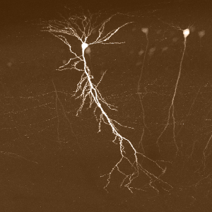

April 2015 | Lecture given as part of Science in the News Boston's Public Seminar Series. Opiates,
the class of molecules that includes morphine, heroin, and codeine, are arguably the most addicting drugs known to exist. This class of drugs has single-handedly started wars,
forced international laws, and to this day is responsible for more drug-overdose deaths in the USA than every other drug of abuse combined. How do opiates do this?
To exercise their profound influence on reward and behavior, these molecules hijack a natural system of reward in a brain area known as the striatum.
What functions does the striatum normally carry out, and how does the presence of opiates in this brain region cause addiction?
This talk will explore what roles the striatum normally plays in governing behavior and why it makes sense that the presence of opiates in the
striatum act to powerfully inflict addiction. Along the way, I hope to provide some insight into how the root of addiction, the inflexibility of OCD,
and the admirable ability of riding a bike are all deeply related in the brain.

October 2014 | Lecture given as part of Science in the News Boston's Public Seminar Series together
with Laura Driscoll. The simplest way to think about the brain is as a platform through which we can interact with the world.
Highly specialized sensory structures in our peripheral nervous system detect information in our environment and send these
sensory signals to the “information hub” of our bodies, the brain. Here, sensory information is processed to produce an
internal precept of the external world. This internal representation is our brain’s best guess at what’s going on around us,
but this picture is not a perfect one, and we’ll discuss the limits of our own perception. The brain uses its interpretation of
what is going on around us to then instruct remarkably precise and context appropriate behavior. Using motor movement as the key example,
we will describe how cortex is involved in producing the ‘ideas’ of movement. A completely different system of the
brain – the basal ganglia – is critically important for taking these ‘ideas’ from the cortex and refining them into precise and smooth behaviors.
We’ll show how abnormal activity in both cortex and basal ganglia result in aberrant behavior and disease.
Ultimately, this lecture is about appreciating the most fundamental functions of the brain: accurately and
appropriately interpreting the world and reacting to it, and what can happen when it fails.